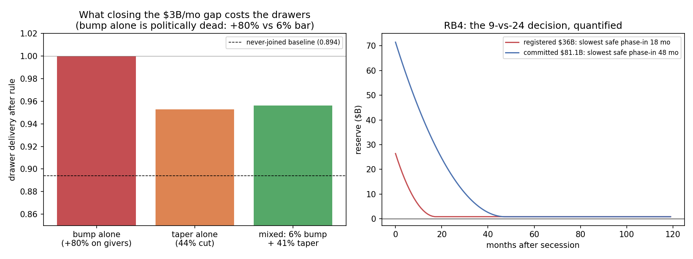

In plain language
July 11, 2026. Companion to RESULTS - v32.0 Payer-Exit Re-balancing.
The cliffhanger this resolves
The secession test (v20) ended on a countdown: lose a big paying region and the union has a $3-billion-a-month hole, with a reserve that buys somewhere between nine months and two years (depending on a sizing rule flagged for ratification in the July 11 audit). Buys time for what, though? This run prices the actual fixes.
The three options, priced
Ask the remaining rich regions to cover it: dead. They'd need an 80% increase in what they already contribute — and the political ceiling established across earlier tests is about 6%. This was registered as "expected to fail" and it failed by thirteen-fold, which is the point: now it's on the record with a number, so nobody proposes it in a crisis.
Trim the poorer regions' top-up: surprisingly gentle. The subsidy is a bonus on top of regions that already fund ~89% of their own safety nets. Cutting it 44% — enough to close the whole hole with no help from anyone — moves their delivery from 100% to about 95%. Nobody goes anywhere near where they'd be if they'd never joined.
Mix: cap the rich regions' extra at 6%, taper the rest. Delivery lands at ~96%. This is the recommended pre-written response.
What the reserve size actually decides
Here's the reframe the numbers force: the reserve isn't there to pay the hole (it can't, forever) — it's there to buy negotiating time while the taper phases in. The lean reserve rule ($36B) supports a phase-in of at most 18 months; the big rule ($81B) supports 4 years. So the flagged 9-vs-24-month ratification question is really: how much diplomacy time should a payer exit come with, and at what reserve cost? That's a values call — but now it's a priced one.
One line
You can't bill the survivors and you don't have to starve the drawers: a pre-agreed 6%-capped contribution bump plus a phased subsidy taper closes a payer-exit hole at ~4½ points of delivery — and the reserve size you ratify is simply how many months of negotiating room the phase-in gets.
Figures

Technical results
Run: July 11, 2026. Spec: v32 SPEC - Payer-Exit Re-balancing (registered).md — bars RB0–RB5 fixed before code. Engine: payer_exit_rebalancing_sim.py (v20's mechanism replicated verbatim — constants copied, not imported, per the v9 import-guard rule; fully deterministic). Committed: results_v32.json, fig_v32_rebalancing.png. Evidence for the 9-vs-24 reserve-sizing ratification (v20/v4) and gate-22's pre-commitment content (DR-14). Every number traces to results_v32.json.
Verdict in one line: the payer-exit hole cannot be closed by asking the remaining rich to pay more (a bump alone needs +80% of their existing burden against a 6% political bar — RB1 FAILS as pre-registered), it is closed cheaply by tapering the subsidy (a 41–45% taper costs the drawers only ~4.4–4.7pp of delivery, landing at 0.953–0.956, far above their 0.894 never-joined baseline) — and the reserve-sizing choice the July 11 audit flagged turns out to be a political-time decision: the registered $36B reserve forces the taper to full depth within ~18 months; the committed $81.1B sizing allows a ~48-month phase-in. Buy reserve, buy negotiating room — that is the whole difference.
Bar summary (RB1 FAILED as pre-registered — the finding; all others pass)
| Bar | Registered | Measured | Result |
|---|---|---|---|
| RB0 regression anchor | v20's committed post-exit facts exact | gap $3,006.6M/mo; runways 24 / 9 months (committed / registered sizing, matching v20's registered_dial_probe) |
PASS |
| RB1 slice-bump alone | closes gap under the 6% tolerance anchor | needs +80.2% of remaining givers' existing burden | FAIL (pre-registered expectation — finding F1) |
| RB2 taper alone | report closing taper + humane cost | 44.5% cut → drawer delivery 0.9528 (baseline 0.894) | PASS (descriptive) |
| RB3 mixed, bump capped 6% | report residual taper + delivery | 6% bump = $225M/mo → 41.2% taper, delivery 0.9564 | PASS (descriptive) |
| RB4 phase-in windows | slowest safe linear ramp per reserve rule | registered $36B: 18 months; committed $81.1B: 48 months (+30) | PASS (descriptive — the 9-vs-24 evidence) |
| RB5 no-print + conservation | zero printing; drain matches closed form | 0 printed; drain = gap·(M+1)/2 exact | PASS |
Findings
F1 — You cannot bill the survivors (RB1, failed on schedule). Closing a departed payer's $3.0066B/mo hole from the two remaining rich regions' pockets means raising their contributions +80.2% — thirteen times the 6% political-tolerance anchor that v5.4/v21-K4 established, against members who just watched a peer walk rather than keep paying. This bar was registered expecting exactly this failure so the magnitude is on the record: slice-bumps are a rounding term (a capped 6% bump buys $225M of the $3,007M hole), not a re-balancing tool. Gate-22's pre-commitment should therefore never promise a bump-led response.
F2 — The taper is cheap because the subsidy is marginal (RB2/RB3, the humane arithmetic). The whole drawer subsidy is a top-up on regions that already self-fund 89.4% of their floors (v20 S1's structural fact). So cutting the subsidy 44.5% — enough to close the entire gap with no bump at all — moves drawer delivery only from 1.0 to 0.9528; with the 6% bump included, 41.2% and 0.9564. Nobody approaches their never-joined baseline (0.894), and by v20's S1 construction nobody can go below it. The honest sentence for gate-22: a payer exit costs the drawers about 4½ points of delivery, phased — not their floor.
F3 — The 9-vs-24 reserve decision is really an 18-vs-48-month diplomacy budget (RB4, the decision evidence). A taper of this size is a treaty change; the reserve's job is to buy the time to negotiate and phase it. Under the SPEC-registered sizing ($36B, the seceding region's own obligation), the slowest linear phase-in that never exhausts the reserve is 18 months; under the committed sizing ($81.1B, union volume), 48 months. Neither is "right" — one is lean (cheaper to fund, forces decisive renegotiation inside two years), one is patient (a full political cycle of runway, at more than double the reserve cost). Recommendation: ratify the reserve rule as an explicit choice of phase-in budget — and write gate-22's pre-commitment as the RB3 mixed rule (6%-capped bump + taper to close, linear ramp ≤ the ratified window), so the response to a payer exit is arithmetic on treaty day, not a scramble.
Honest limits
Deterministic accounting on v20's reduced form — it inherits every v20 caveat (transfers and elasticities are dials; no secession politics or contagion; single payer exits; the currency-drawdown channel is v20's, untouched here). The phase-in model is a linear ramp of the funding rule; it does not model drawers' consumption smoothing or a renegotiation that changes the transfer matrix itself. The 6% tolerance anchor is imported from v5.4/K4 lineage, not re-derived. One build note, per house custom: the RB5 conservation check initially failed on the checker's own closed-form arithmetic (an off-by-one: Σ(1−m/M) = (M+1)/2, not (M−1)/2) — the model's drain was right, the check was wrong, the check was fixed; that is what conservation bars are for.
Plain language
If the union's biggest paying region walks out, three ways to plug the $3B/month hole: make the remaining rich pay more (dead on arrival — it takes an 80% raise against members who'd riot at 6%), cut the poorer regions' top-up (surprisingly gentle — even a 44% cut only moves them from 100% delivery to ~95%, because they already self-fund ~89%), or mix (cap the raise at 6%, taper the rest — ~96%). The real decision is how slowly you can afford to phase the cut in, and that's exactly what the reserve size buys: the lean reserve gives 18 months of runway, the big one gives 4 years. Pick the reserve by picking how much negotiating time a payer exit should buy — then write the response into the sponsor contract in advance, so the day it happens it's arithmetic, not panic.
Run and written July 11, 2026 by the Fable 5 verification session (post-Verification-v4 evidence run, owner-directed). Spec registered before code; RB1's failure was pre-registered and is reported as the finding it is; bars unmoved. Deterministic — byte-identical on re-run.
Raw data